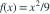
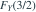
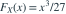

的密度为
的密度为 
（）。定义 ：当 时取 2，当 时取 ，当 时取 1。
：当 时取 2，当 时取 ，当 时取 1。
等于多少？- A
- B
- C
- D

我已思考，展开答案与解析
正确答案：C
- 对应两个互斥区域：，或者 。
- 由于

，所求概率为 。 - 此变换会在 和 处产生原子概率，因此不能只对连续部分的密度积分。
易错提醒不能把多个 X 区间映射到同一个 Y 值的概率丢掉。
南审 813 · 2025 · 一·1(2)，PDF第1页
从大题拆分考点并重新编写选项；数值或设问有调整。
查看参考来源